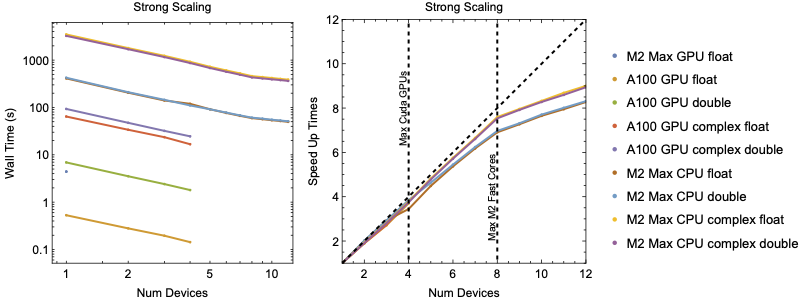
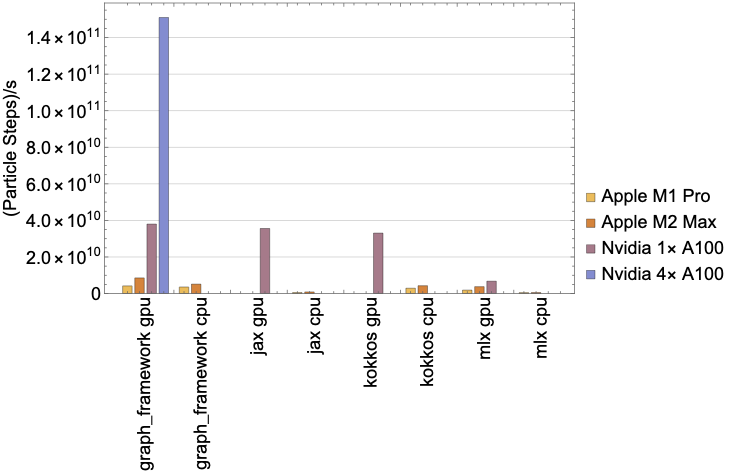

Benchmark cases for the graph framework.
Introduction
In this section we will look at the peformance of codes deveoped using this framework.
Strong Scaling

Left: Strong scaling wall time for 100000 Rays traced in a realistic tokamak equilibrium. Right: Strong scaling speedup normalized to the wall time for a single device or core. The dashed diagonal line references the best possible scaling. The M2 Max has 8 fast performance cores and 4 slower energy efficiency cores resulting drop off in improvement beyond 8 cores.
To benchmark code performance we traced \(10^{6}\) rays for \(10^{3}\) timesteps using the cold plasma dispersion relation in a realistic tokamak equilibrium. The figure above shows the strong scaling of wall time as the number of GPU and CPU devices are increased. The figure above shows the strong scaling speed up
\begin{equation}SpeedUp = \frac{time\left(1\right)}{time\left(n\right)}\end{equation}
Benchmarking was prepared on two different setups.
The first set up as a Mac Studio with an Apple M2 Max chip. The M2 chip contains a 12 core CPU where 8 cores are faster performance codes and the remaining 4 are slower efficiency cores. The M2 Max also contains a single 38-core GPU which only support single precision operations. The second setup is a server with 4 Nvidia A100 GPUs. Benchmarking measures the time to trace \(10^{6}\) rays but does not include the setup and JIT times.
The figure above shows the advantage even a single GPU has over CPU execution. In single precision, the M2's GPU is almost \(100\times\) faster a single CPU core while the a single A100 has a nearly $800\times$ advantage. An interesting thing to note is the M2 Max CPU show no advantage between single and double precision execution.
For large problem sizes the framework is expected to show good scaling with number of devices as the problems we are applying are embarrassingly parallel in nature. The figure above shows the strong scaling speed up with the number of devices. The framework shows good strong scaling as the problem is split among more devices. The architecture of the M2 Chip contains 8 fast performance cores and 4 slower energy efficiency cores. This produces a noticeable knee in the scaling after 8 core are used. Overall, the framework demonstrates good scaling across CPU and GPU devices.
Comparison to other Frameworks

Particle throughput for graph framework compared to MLX and JAX.
To benchmark against other frameworks we will look at the simple case of gyro motion in a uniform magnetic field \(\vec{B}=B_{0}\hat{z}\).
\begin{equation}\frac{\partial\vec{v}}{\partial t} = dt\vec{v}\times\vec{B}\end{equation}
\begin{equation}\frac{\partial\vec{x}}{\partial t} = dt\vec{v}\end{equation}
We compared the graph framework against the MLX framework since it supports Apple GPUs, JAX due to it's popularity, and Kokkos for its performance portability. Source codes for this benchmark case is available in the appendix. Figure fig:compare} shows the through put of pushing $10^{8}$ particles for $10^{3}$ time steps. The graph framework consistently shows the best throughput on both CPUs and GPUs. Note MLX CPU throughput could by improved by splitting the problem to multiple threads.
Source codes for throughput benchmark comparison
Graph Framework
const size_t size = 100000000;
const size_t steps = 1000;
std::vector<std::thread>
threads(std::max(std::min(num_devices),
static_cast<unsigned int> (size)),
static_cast<unsigned int> (1)));
const size_t batch = size/threads.size();
const size_t extra = size%threads.size();
for (size_t i = 0, ie = threads.size(); i < ie; i++) {
threads[i] =
std::thread([batch, extra,
&time_steps] (const size_t thread_number) -> void {
const size_t local_size = batch + (extra > thread_number ? 1 : 0);
auto lorentz = v->cross(b);
auto v_next = v + dt*lorentz;
auto pos_next = pos + dt*v_next;
work.add_item({
}, {}, {
}, NULL, "Lorentz_kernel", local_size);
work.compile();
time_steps.start_time(thread_number);
for (size_t j = 0; j < steps; j++) {
work.run();
}
work.wait();
time_steps.end_time(thread_number);
}
for (std::thread &t : threads) {
t.join();
}
time_steps.print_max();
static size_t max_concurrency()
Get the maximum number of concurrent instances.
Definition jit.hpp:85
A timing object that averages over multiple threads.
Definition timing.hpp:67
Class representing a workflow manager.
Definition workflow.hpp:171
constexpr shared_leaf< T, SAFE_MATH > zero()
Forward declare for zero.
Definition node.hpp:995
shared_vector< T, SAFE_MATH > vector(shared_leaf< T, SAFE_MATH > x, shared_leaf< T, SAFE_MATH > y, shared_leaf< T, SAFE_MATH > z)
Build a shared vector quantity.
Definition vector.hpp:133
shared_variable< T, SAFE_MATH > variable_cast(shared_leaf< T, SAFE_MATH > x)
Cast to a variable node.
Definition node.hpp:1747
constexpr T i
Convenience type for imaginary constant.
Definition node.hpp:1027
MLX
typedef const std::vector<mlx::core::array> &inputs;
typedef std::vector<mlx::core::array> outputs;
typedef std::function<outputs(inputs)> function;
mlx::core::set_default_device(mlx::core::Device::gpu);
function push = mlx::core::compile([](inputs in) -> outputs {
const float dt = 0.000001;
const mlx::core::array zero = mlx::core::zeros({1});
const mlx::core::array one = mlx::core::zeros({1});
const mlx::core::array vx_next = in[3] + dt*(in[4]*
one - in[5]*
zero);
const mlx::core::array vy_next = in[4] + dt*(in[5]*
zero - in[3]*
one);
const mlx::core::array vz_next = in[5] + dt*(in[3]*
zero - in[4]*
zero);
const mlx::core::array x_next = in[0] + dt*vx_next;
const mlx::core::array y_next = in[1] + dt*vy_next;
const mlx::core::array z_next = in[2] + dt*vz_next;
return {x_next, y_next, z_next, vx_next, vy_next, vz_next};
});
const int size = 100000000;
const int steps = 1000;
mlx::core::array x = mlx::core::zeros({size});
mlx::core::array y = mlx::core::zeros({size});
mlx::core::array z = mlx::core::zeros({size});
mlx::core::array vx = mlx::core::ones({size});
mlx::core::array vy = mlx::core::zeros({size});
mlx::core::array vz = mlx::core::ones({size});
outputs in = {x, y, z, vx, vy, vz};
const std::chrono::high_resolution_clock::time_point start = std::chrono::high_resolution_clock::now();
for(
size_t i = 0;
i < steps;
i++) {
in = push(in);
for (mlx::core::array &i : in) {
}
}
std::chrono::high_resolution_clock::time_point end = std::chrono::high_resolution_clock::now();
const auto total_time = end - start;
constexpr shared_leaf< T, SAFE_MATH > one()
Forward declare for one.
Definition node.hpp:1008
JAX
def push(x, y, z, vx, vy, vz):
dt = 0.000001
vx_next = vx + dt*(vy*1 - vz*0)
vy_next = vy + dt*(vz*0 - vx*1)
vz_next = vz + dt*(vx*0 - vy*0)
return vx_next, vy_next, vz_next,
x + dt*vx_next, y + dt*vy_next, z + dt*vz_next
size = 100000000
steps = 1000
x = jax.numpy.zeros((size))
y = jax.numpy.zeros((size))
z = jax.numpy.zeros((size))
vx = jax.numpy.ones((size))
vy = jax.numpy.zeros((size))
vz = jax.numpy.ones((size))
start = time.time()
for i in range(0, steps):
x, y, z, vx, vy, vz = push_jit(x, y, z, vx, vy, vz)
jax.block_until_ready([x, y, z, vx, vy, vz])
end = time.time()
print(end - start)
Name space for JIT functions.
Definition jit.hpp:41
Kokkos
const size_t size = 100000000;
const size_t steps = 1000;
using ViewVectorType = Kokkos::View<float *, Kokkos::SharedSpace>;
ViewVectorType x("x", size);
ViewVectorType y("y", size);
ViewVectorType z("z", size);
ViewVectorType vx("vx", size);
ViewVectorType vy("vy", size);
ViewVectorType vz("vz", size);
Kokkos::parallel_for(size, KOKKOS_LAMBDA(const int64_t index) {
vx[index] = 1;
vz[index] = 1;
});
const std::chrono::high_resolution_clock::time_point start = std::chrono::high_resolution_clock::now();
for (size_t i = 0; i < steps; i++) {
Kokkos::parallel_for(size, KOKKOS_LAMBDA(const int64_t index) {
const float dt = 0.000001;
const float vx_next = vx[index] + dt*(vy[index]*1 - vz[index]*0);
const float vy_next = vy[index] + dt*(vz[index]*0 - vx[index]*1);
const float vz_next = vz[index] + dt*(vx[index]*0 - vy[index]*0);
x[index] += dt*vx_next;
y[index] += dt*vy_next;
z[index] += dt*vz_next;
vx[index] = vx_next;
vy[index] = vy_next;
vz[index] = vz_next;
});
}
Kokkos::fence();
std::chrono::high_resolution_clock::time_point end = std::chrono::high_resolution_clock::now();
const auto total_time = end - start;
 1.9.8
1.9.8